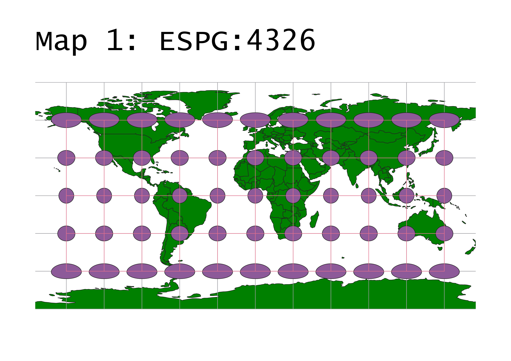
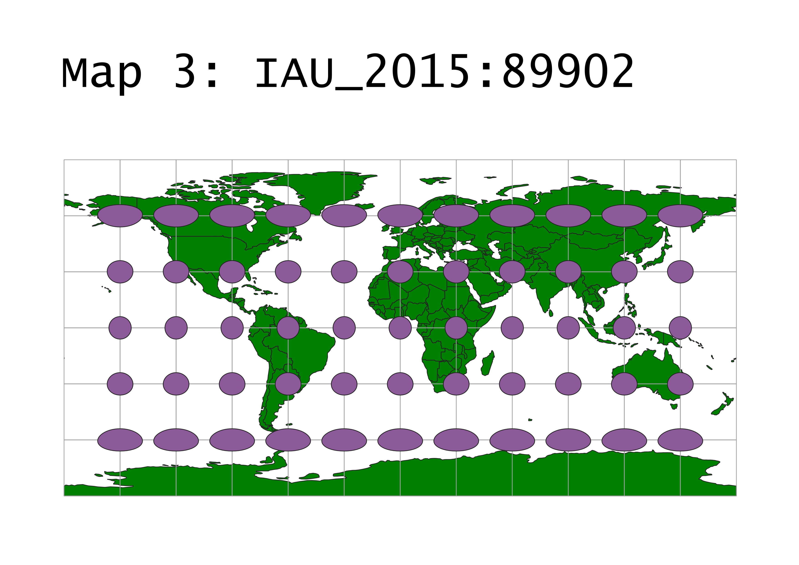

Suzanne Tyler
GEOG 370-006
Homework 3
This map is a great basic map and is very commonly used in mapping softwares and projects. It seeks to find a balance between distortions of shape and area. Areas closest to the equator are most representative of true form, while areas close to the poles are more distorted. This is especially clear when looking at Greenland, which appears to be much larger than life on this map.
This map is interesting becuase it is not an ESPG projection
